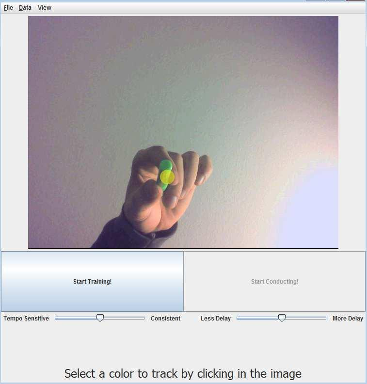

WaveBeat: A Conducting System for User-Focused Gesture Recognition
Advisor: Rebecca Fiebrink
TL;DR WaveBeat is a conducting system. You define a set of conducting
gestures, and then WaveBeat will play back a piece of music, following your tempo and
your chosen gestures in real time.
Abstract
Many conductor following systems have been designed in the past that use gesture
recognition and learning algorithms to great effect. Most such systems, however, are based on
specialized models and are designed and configured by experts in these fields. Being able to
generalize the use of such gesture recognition and learning algorithms would allow more people
to harness the power of these fields and use them in a diverse set of applications. To investigate
the nature of such user-focused generalization, we present the WaveBeat system, a conducting
system that uses independent, non-specific modules to implement real-time gesture recognition.
This system can follow both standard conducting patterns as well as user-defined patterns, and
allows users to configure relevant parameters to suit the algorithms to their needs.
The user-centric design of WaveBeat demonstrates that, although performance is affected by the
loss of specificity, it is possible to create functional systems around generalized gesture
recognition and machine learning components. |  |
Overview of the System
The WaveBeat system presents a unified interface in which a user can define a beat pattern by
following a metronome, and then conduct a short piece of music using the defined gestures. To
recognize conducting gestures, WaveBeat must first translate user gestures into a set of
numerical data vectors that the learning algorithm can use. For the purposes of portability, we
use a webcam as the input device; the program senses conducting gestures by tracking the
location of a brightly colored glove or baton. A feature extractor records the location of the
object in the webcam's two-dimensional field of view as raw data, which we then use as input to
the learning algorithm. The learning algorithm used in WaveBeat makes heavy use of the
implementation of the Fast Dynamic Time Warping (FastDTW) algorithm provided in the java-ml
machine learning library. During training, WaveBeat uses the raw data provided by the
feature extractor to train an instance of FastDTW separately for each beat gesture. During
performance, each vector of raw data is fed to this algorithm and results in a classification for the
current beat. These classifications are then processed and used to vary the parameters of the
playback of a piece of music through the
ChucK real-time
programming language. The entire training-performance process is packaged into a user interface that
simplifies the supervised learning process and allows convenient configuration while hiding the
details of the learning algorithm used.